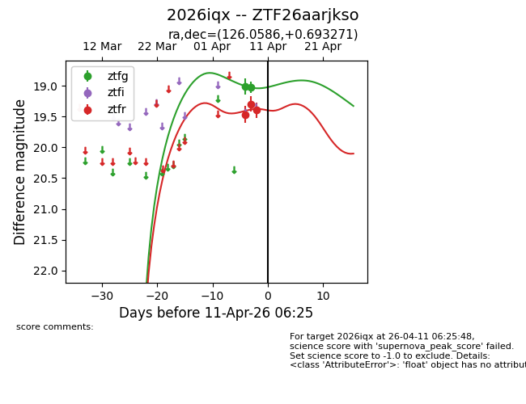
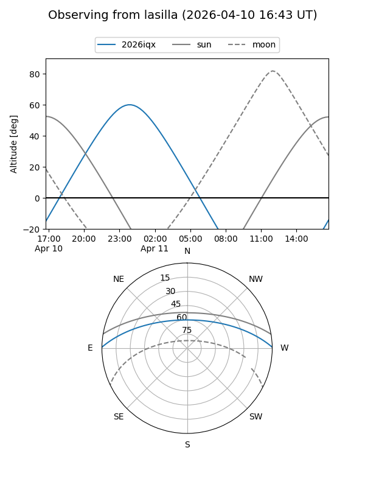
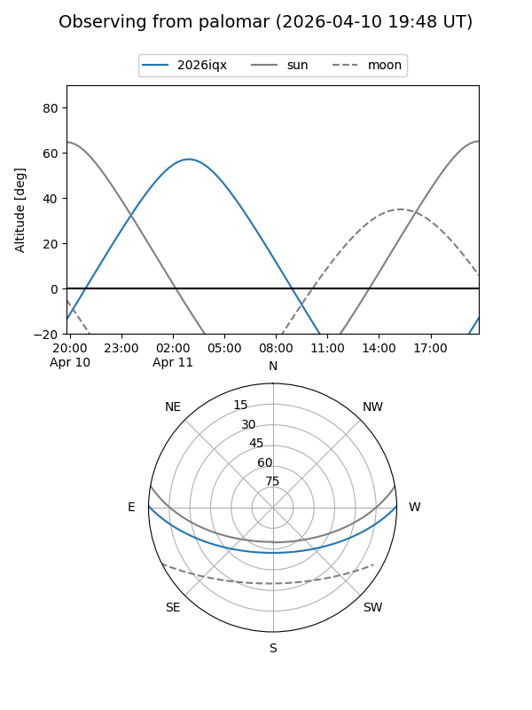
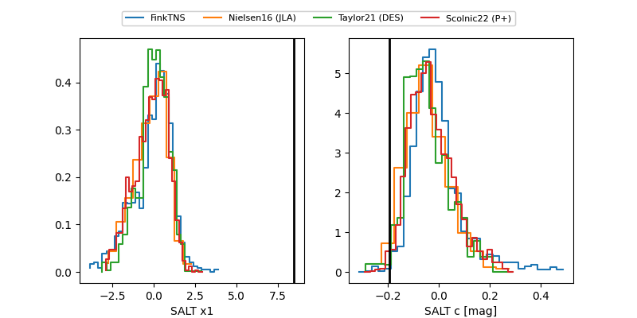

2026iqx
Target 2026iqx at 2026-04-11 06:34
Aliases and brokers:
FINK: link
Lasair: link
ALeRCE: link
TNS: link
YSE: link
alt names
ZTF26aarjkso (ztf,fink_ztf)
2026iqx (tns,yse)
Coordinates:
equatorial (ra, dec) = 126.0586,+0.69327
equatorial (HMS+DMS) = 08:24:14.07,+00:41:35.77
galactic (l, b) = (223.3417,+20.85983)
Flags:
Photometry:
last ztfg=19.03, ztfr=19.40
2 ztfg, 3 ztfr detections
Lightcurve

Visibility


Additional plots
